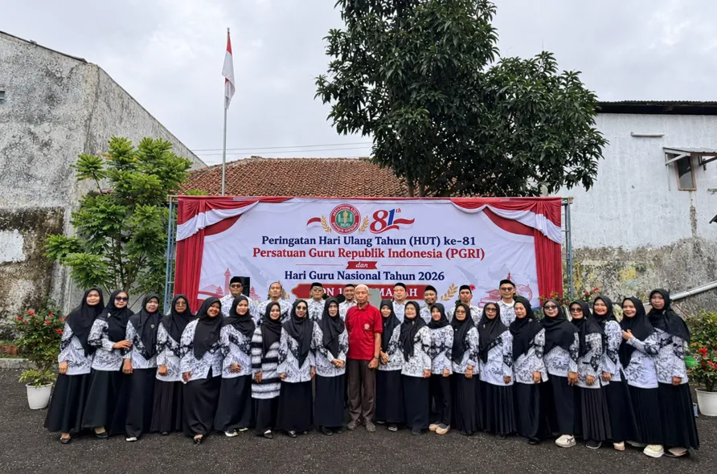

Semarak HUT ke-81 PGRI dan Hari Guru Nasional 2026
SDN 1 Sukamanah

Peringatan Hari Ulang Tahun (HUT) ke-81 Persatuan Guru Republik Indonesia (PGRI) dan Hari Guru Nasional Tahun 2026 menjadi momentum istimewa bagi keluarga besar SDN 1 Sukamanah Kota Tasikmalaya untuk memberikan penghargaan kepada para guru atas dedikasi, pengabdian, dan perjuangannya dalam mencerdaskan generasi penerus bangsa.
Peringatan ini menjadi kesempatan untuk mempererat kebersamaan, menumbuhkan rasa kekeluargaan, serta memperkuat semangat pengabdian dalam dunia pendidikan.
Guru bukan hanya sosok yang menyampaikan ilmu pengetahuan, tetapi juga pembimbing, teladan, dan sumber inspirasi bagi peserta didik dalam membangun karakter serta meraih cita-cita.
Terima Kasih, Bapak dan Ibu Guru!
Setiap ilmu yang dibagikan, kesabaran dalam membimbing, dan ketulusan dalam mendidik merupakan bekal berharga bagi masa depan anak bangsa.
🎥 Video Dokumentasi Kegiatan
Dokumentasi video peringatan Hari Guru Nasional 2026 SDN 1 Sukamanah.
Menjaga Semangat Mendidik
Melalui momentum Hari Guru Nasional ini, keluarga besar SDN 1 Sukamanah berkomitmen untuk terus meningkatkan kualitas pendidikan, menciptakan lingkungan belajar yang menyenangkan, serta membentuk generasi yang cerdas, berkarakter, dan berakhlak mulia.
Semoga semangat kebersamaan dan pengabdian ini senantiasa menjadi motivasi bagi seluruh insan pendidikan untuk terus berkarya, berinovasi, dan memberikan yang terbaik bagi masa depan anak bangsa.
📸 Dokumentasi Kegiatan
Selamat HUT ke-81 PGRI dan Hari Guru Nasional 2026!
Terima kasih atas setiap ilmu, kesabaran, ketulusan, dan pengabdian yang tiada henti.
SDN 1 Sukamanah